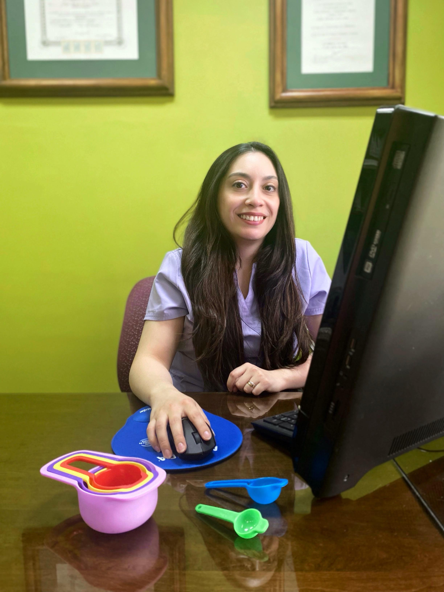

Nutricionista María Ignacia Linz
Nutricionista María Ignacia Linz
Nutricionista María Ignacia Linz
Nutricionista María Ignacia Linz
Te acompaño en embarazo, lactancia e infancia con planes personalizados y sin culpas.

Un espacio seguro para resolver dudas, ordenar hábitos y construir una relación saludable con la alimentación.
Evaluación inicial
Plan nutricional personalizado
Seguimiento continuo
Comencemos un acompañamiento nutricional cercano y personalizado.
Agendar hora